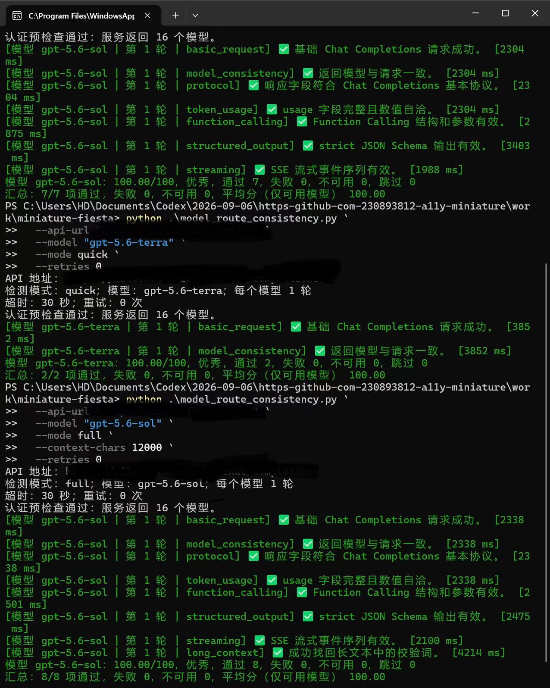
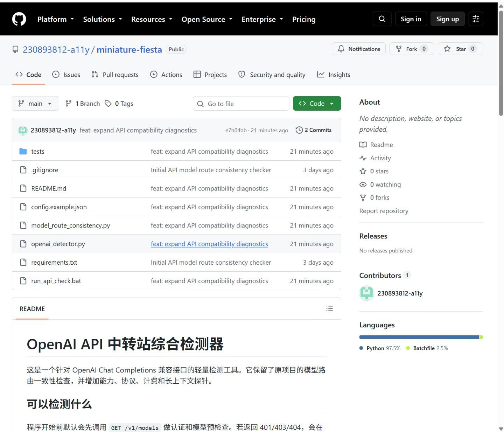
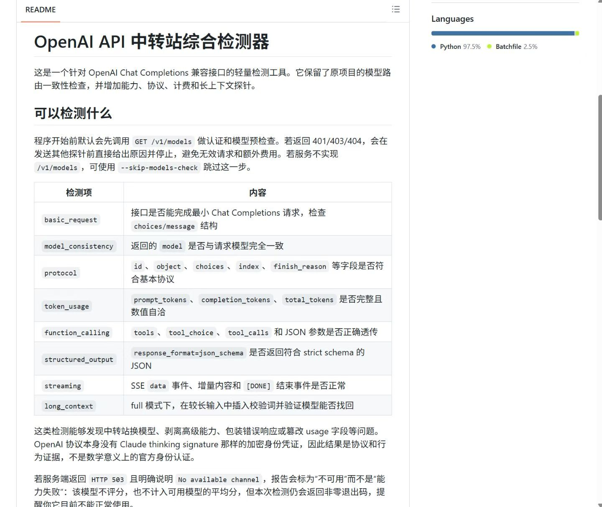

OPENAI COMPATIBILITY CHECK
OpenAI 兼容 API 诊断工具
检查兼容接口认证、协议能力和响应字段一致性的命令行工具。

VERIFIED TERMINAL RUN项目背景
不同中转站或兼容接口可能在模型列表、流式响应、Function Calling 和字段结构上存在差异，需要一个可重复的检查工具。
本人负责
CLI、HTTP 探针、错误分类、评分报告、重试策略与单元测试。
已验证内容
截图中的一次运行显示模型列表、基础请求、协议、token usage、Function Calling、结构化输出和流式响应检查通过；这证明该次运行结果，不等于所有接口永久可用。
运行证据

